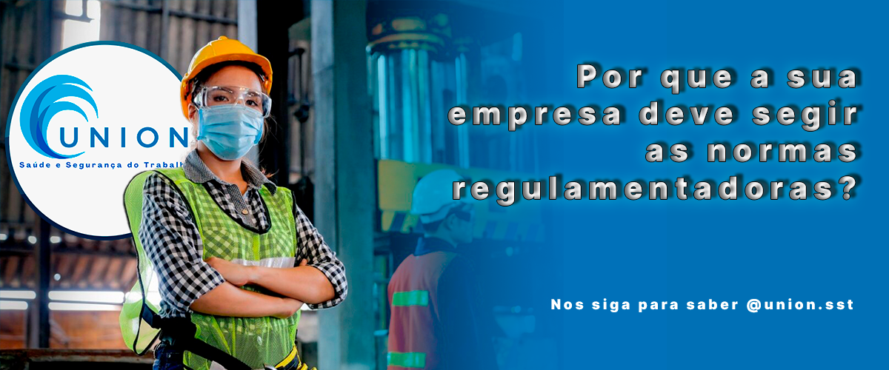

A Union SST é uma empresa de saúde e segurança do trabalho, que oferece soluções personalizadas para cada cliente, de acordo com as normas regulamentadoras e as melhores práticas do mercado. A Union SST é focada em ser profissional, qualificada e experiente, e realiza serviços de consultoria, assessoria, entre outros, com o objetivo de prevenir acidentes e doenças ocupacionais, garantir o bem-estar dos trabalhadores e melhorar o desempenho das organizações.
A Union SST se diferencia pela qualidade, eficiência e inovação em seus projetos de segurança do trabalho, os nossos principais serviços são: PGR, LTCAT e Higiene Ocupacional
A Union SST foi criada em maio de 2022, com a missão de zelar pelas vidas das pessoas que fazem parte das organizações, promovendo uma cultura de segurança e saúde no trabalho, nos sigam no Instagram para saber mais @union.sst
SST é a sigla para Saúde e Segurança do Trabalho, e é usada para designar um grupo de normas que visa tornar o ambiente de trabalho mais saudável e seguro para os trabalhadores. A CLT, em seu artigo 162 determina que as empresas, de acordo com as normas a serem expedidas pelo Ministério do Trabalho estarão obrigadas a manter serviços especializados em segurança e medicina do trabalho. Também de acordo com a legislação, dependendo do número de funcionários e o grau de risco oferecido no desempenho da função (vide NR 04) a empresa deve dispor de estrutura e profissionais especializados na própria sede ou terceirizar este serviço.
Até hoje, a informação dos dados de laudos técnicos e programas instaurados nas empresas eram prestados através de várias declarações enviadas a entidades diferentes e em momentos também diferentes. E levando-se em conta que antes do e-Social a fiscalização física conseguia cobrir apenas 5% do total de empresas no Brasil, o quadro era de muita má-fé e impunidade. Ao ignorar as normas de SST e as companhias se expunham ao risco de multas que aconteciam através da visita dos fiscais – porém, como esta muitas vezes isso não acontecia, a manobra com frequência era bem-sucedida. Objetivo das normas de Saúde e Segurança do Trabalho É importante lembrar que as normas de Saúde e Segurança do Trabalho além de protegerem o trabalhador, auxiliam a empresa em uma gestão mais eficiente. Isso porque, ao proteger seus funcionários e pagar os adicionais relativos aos riscos corridos em suas atividades corretamente, a empresa diminui exponencialmente o número de processos judiciais. Também existe a questão de que quanto mais perigoso for o ambiente de trabalho a que o colaborador está submetido, maior carga de impostos a empresa deve ao governo. Por isso que, além de detectar os fatores de risco, esses laudos técnicos também apontam para as soluções que podem ser adotadas e, após implementadas, geram uma redução de custos ainda maior.
Com a chegada do e-Social a situação está prestes a mudar devido à obrigatoriedade de fornecer com a frequência exigida eventos referentes a laudos, programas e quaisquer afastamentos por acidente de trabalho ou doença – nestes casos, a informação deve ser prestada imediatamente. Isso faz com o que o governo tenha em mãos todos os dados a respeito de como a empresa está lidando com a segurança e saúde dos seus funcionários. E tudo isso a apenas um clique. Por isso, quem não vem cumprindo todas as obrigatoriedades ditadas tem com o que se preocupar – e muito trabalho a fazer.
O Programa de Gerenciamento de Riscos (PGR) é a materialização do processo de Gerenciamento de Riscos Ocupacionais (por meio de documentos físicos ou por sistema eletrônico), visando à melhoria contínua das condições da exposição dos trabalhadores por meio de ações multidisciplinares e sistematizadas.
O PGR deve ser composto, no mínimo, por dois documentos:
a) Inventário de Riscos Ocupacionais, que compreende as etapas de Identificação de Perigos e Avaliação de Riscos, de modo a estabelecer a necessidade de medidas de prevenção;
b) Plano de Ação, onde se estabelecem as medidas de prevenção a serem introduzidas, aprimoradas ou mantidas, de modo a eliminar, reduzir ou controlar os riscos ocupacionais.
O Laudo Técnico das Condições Ambientais de Trabalho tem como objetivo avaliar qualitativa e quantitativamente os agentes de riscos previstos na legislação previdenciária e existentes no ambiente de trabalho.
Elaboração de Laudo de Insalubridade conforme NR 15
Laudo de Periculosidade de acordo com a NR 16
Treinamentos x Normas Regulamentadoras
a Higiene Ocupacional é uma ciência, que tem como finalidade antecipar, reconhecer, avaliar e controlar os riscos ocupacionais nos ambientes de trabalho.
Acima de tudo, essas ações são relacionadas à redução dos riscos e prevenção de doenças ocupacionais causadas por agente ambientais. Esta transmissão nociva pode ser causada por agentes:
físicos - Gerados por equipamentos ou condições físicas do ambiente de trabalho. (ex: calor, frio, radiações, ruídos, etc).
químicos - provenientes de substâncias químicas em seu estado líquido, sólido ou gasoso. (ex: poeira, gases, vapores, etc).
biológicos - Causados por microrganismos capazes de provocar doenças. (ex: bactérias, fungos, vírus, etc).